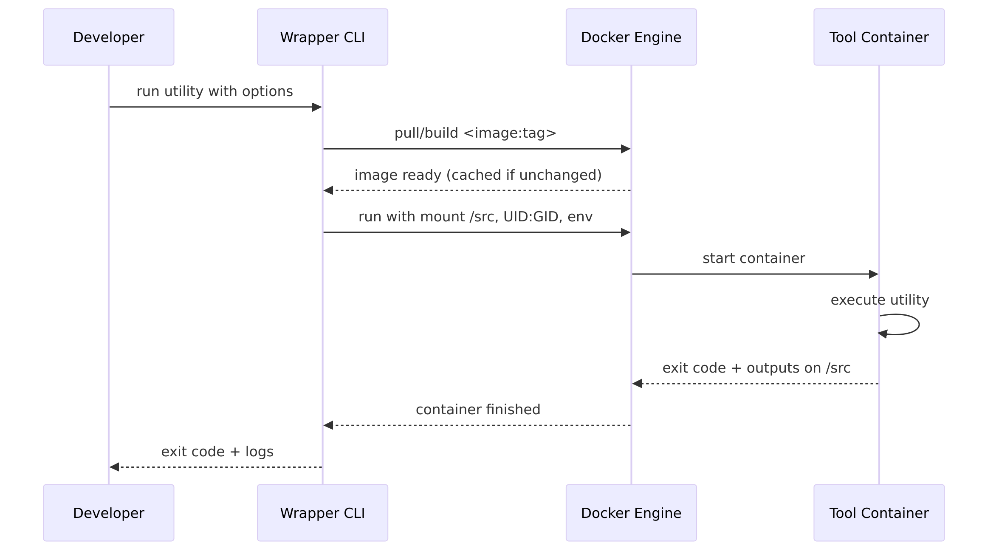
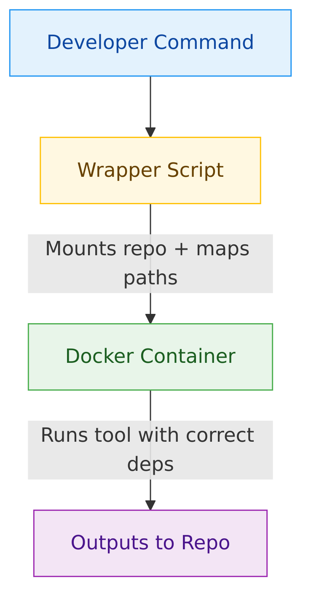

Docker Executables: No More Install Guides
Have you ever spent hours trying to install a tool, only to hit version conflicts or mysterious errors? Do you need to run the same tool on different computers (e.g., Mac vs Linux laptops vs AWS dev servers vs CI servers), having problems maintaining the tools aligned, or even just building?
At Causify, we face this problem repeatedly with different developer utilities. To solve it, we introduced a toolchain pattern we call Dockerized Executables.
Instead of baking every utility into one "kitchen-sink" dev image, we package each tool in its own slim image and run it on demand. That keeps the base dev environment lean, avoids cross-tool dependency conflicts, and lets us version/upgrade/rollback tools independently without rebuilding the whole stack. CI and local caches pull only what’s needed, which speeds builds and reduces churn, and the smaller, purpose-built images also shrink the security surface. In short: per-tool containers give us cleaner isolation and faster iteration than a single all-in-one image. Developers call the familiar tool name, but behind the scenes, it runs inside a container with all its dependencies pre-packaged and controlled.
The container image includes everything required to run the tool. A thin Python wrapper handles mounting the repository and path conversions across Docker and user space, and the output lands directly back in the workspace. From the developer’s perspective, a Dockerized Executable behaves the same as a local install, just without the setup pains or environment drift.
Why We Built This#
- Installation struggles: Some tools require long setup guides, heavy dependencies, or fragile environment configs.
- Inconsistent environments: A tool might behave differently across macOS, Linux, and CI pipelines.
- Recurring time sink: Installing and configuring utilities often leads to wasted time debugging setups before real work can begin.
How It Works#
When a developer runs a command, our wrapper script:
- Pulls or builds the correct Docker image (cached on repeat).
- Mounts the repo (and input files) into the container (e.g., at
/src). - Converts paths between host and container file systems.
- Runs the tool inside the container with the requested options.
- Writes outputs back into the repo and propagates the exit code.
It feels identical to a local install, but it’s reproducible and environment independent.
Example: Document Conversion Via a Dockerized Executable#
Goal: Convert a .docx file to Markdown without installing the converter
locally.
python dev_scripts_helpers/documentation/convert_docx_to_markdown.py \
-i docs/weekly_update.docx \
-o docs/weekly_update.md
What happens under the hood (aligned with our flow):
- The Wrapper Ensures the Converter’S Docker Image Is Available (Pull/Build if needed).
- The Repository (And the
docs/Files) Is Mounted Into the Container (e.g., at/src). - Paths Are Mapped Automatically (E.G.,
docs/weekly_update.docx→/src/docs/weekly_update.docx). - The Tool Runs Inside the Container; the Generated
docs/weekly_update.mdis written back to your workspace.
Outcome: Same result as a local install, but with no host setup, consistent behavior across macOS/Linux/CI, and version-controlled tooling.
Other Examples We’Ve Dockerized#
-
Formatting Docs/Code
- Script: dockerized_prettier.py
- Use: Apply consistent formatting across Markdown and source files.
-
Diagram Rendering (Mermaid / Graphviz / Tikz)
- Scripts:
- Use: Render architecture/flow diagrams and convert vector sources to bitmaps inside containers (no local installs).
-
Latex PDF Builds
- Script: dockerized_latex.py
- Use: Build PDFs reproducibly without installing LaTeX on the host/dev container.
-
Llm-Powered Markdown Transforms
- Script: llm_transform.py
- Use: Structured content rewrites (e.g., polishing notes to Markdown).
Technical Guide: Building a Dockerized Executable#
High-Level Steps#
-
Package the tool in a container image. Choose a small base image, install the toolchain, pin versions, and set a safe default entrypoint/working directory.
-
Provide a thin wrapper CLI. It should forward args, mount the repo, map paths, pass required env vars, set UID/GID, stream logs, and return the tool’s exit code.
-
Decide how it runs inside dev containers. Prefer the sibling pattern (dev container → host Docker → tool container) unless you truly need Docker-in-Docker.
-
Normalize paths. Compute paths relative to the repo root and rewrite them to the container mount (e.g.,
/src). -
Harden and cache. Build with content-addressable layers, avoid leaking secrets into layers, and tag images clearly.
-
Test like production. Invoke the same wrapper you ship; assert on files, logs, and return codes.
Minimal Image (Illustrative)#
FROM debian:stable-slim
# Install Your Toolchain and Runtime Here
# RUN Apt-Get Update \
# && Apt-Get Install -Y <Your-Tool> <Dependencies> \
# && Rm -Rf /Var/Lib/Apt/Lists/*
# Create a Non-Root User (Recommended)
RUN useradd -ms /bin/bash appuser
USER appuser
# Work Inside the Mounted Repository Path
WORKDIR /src
# Use a Simple Shell Entrypoint; the Wrapper Supplies the Command
ENTRYPOINT ["/bin/sh", "-lc"]
Wrapper CLI Responsibilities (Summary)#
- Discover the Repo Root.
- Mount Repo Read/Write Into the Container (E.G.,
/src). - Convert Input/Output Paths to
/src/.... - Whitelist and Pass Through Only the Environment Variables the Tool Needs.
- Run Container as the Caller’S UID\:GID to Prevent Root-Owned Outputs.
- Stream Logs and Propagate Exit Code.
Why "discover the repo root" Matters#
When a tool runs inside a container, we need one stable mount point so paths mean the same thing on the host, in a dev container, and inside the tool container. We use the repository root as that anchor:
- Consistent Path Mapping: Inputs Like
docs/notes.mdAre Resolved relative to the repo root and then rewritten to the container path (e.g.,/src/docs/notes.md). This avoids "file not found" errors from absolute/host-specific paths. - Works From Any Subdirectory: Developers Often Run Commands From
docs/orscripts/. Resolving paths against the repo root means the same command works no matter where it’s launched. - Children Vs. Sibling Containers: with Sibling Containers (Dev container → host Docker → tool container), the mount must reference a host-visible path. Using the repo root ensures the right directory is mounted across both patterns.
- Minimal, Predictable Mount: Mounting Only the Repo Root Keeps the environment lean and avoids exposing unrelated host directories.
- CI Parity: CI Checks Out the Repo Into Different Paths. A repo-root–based mount keeps commands stable across laptops, dev containers, and CI runners.
Illustrative Container Invocation#
docker run --rm \
-u "$(id -u):$(id -g)" \
-v "<repo_root>:/src" -w /src \
<image:tag> <entrypoint-or-cmd> <args...>
Path-Mapping Algorithm (Portable)#
- Normalize the caller’s path (host or dev container).
- Resolve to repo-relative (
rel_path). - Rewrite to container path:
/src/${rel_path}.
Sequence Diagram (Build + Run)#

Workflow Diagram#

Running Inside Containers#
Many of our developers already work inside dev containers. Running a containerized tool inside another container requires careful handling. There are two approaches:
- Children Containers (Docker-In-Docker): One Container Launches another. Flexible but requires elevated privileges.
- Sibling Containers: the Dev Container Communicates with the Host’S Docker engine to launch another container. Safer and more efficient, but requires thoughtful mount management.
At Causify, we prefer the sibling approach for most workflows.
Testing the Flow#
- Simulate Real Usage by Invoking the Same Wrapper a Developer Would use.
- Containers Run with Their Normal Entry Points and Configurations.
- Assertions Check Outputs, Logs, or File Changes.
- This Avoids Contrived Test Setups and Ensures Reliability.
Typical Use Cases#
- Formatting and Linting Code or Docs.
- Converting Documents Into Different Formats.
- Rendering Diagrams and Charts.
- Building Reproducible Pdfs.
- Applying Lightweight ML/LLM Utilities for Structured Transforms.
Benefits Recap#
- Reproducibility: Consistent Behavior Everywhere.
- Onboarding Speed: Docker Is the Only Dependency.
- Clean Environments: No More Cluttered Local Installs.
- Controlled Upgrades: Images Are Version-Pinned and Reviewed.
- Cross-Platform Stability: Works Seamlessly Across Macos, Linux, and CI.
Related Work#
When thinking about reproducible tooling, our Dockerized Executable flow is not the only approach in the ecosystem. Similar ideas have emerged in the Python world with tools like uv, which aim to solve dependency management in a more focused way.
Uv for Python Packages#
- What It Does:
uvIs a Rust-Based Package Manager for Python. It installs both Python itself and project dependencies into isolated, cached environments. - Philosophy: Prevent "dependency hell" by Guaranteeing That Everyone on a team resolves to the same versions, without polluting the global environment.
- Strengths: Extremely Fast Installs, Lightweight, and Tailored specifically to Python workflows.
- Limitations: Scope Is Narrow, It Only Solves Problems Within the Python ecosystem.
Dockerized Executables at Causify#
- What We Do: Instead of Targeting One Language, We Containerize Any developer utility—from formatters to document converters to diagram renderers.
- Philosophy: Eliminate Setup Headaches by Running Tools in Docker images that include all their dependencies.
- Strengths: Works Across Languages and Ecosystems, Consistent Behavior across laptops, dev containers, and CI.
- Limitations: Requires Docker, and Images Are Heavier Than Python wheels. There is also a small first-run latency to pull/build the image.
Comparison#
Both approaches are rooted in the same principle: tools should be easy to run,
reproducible, and isolated from the host environment. uv brings that guarantee
to Python packages, accelerating installs and ensuring consistent
environments. Causify’s Dockerized Executables bring the same guarantee to
system-level tools and utilities, many of which live outside Python’s
packaging ecosystem.
Why We Still Need Both#
Teams that are Python-heavy can benefit from uv’s lightning-fast dependency
resolution. For everything else and especially tools that cross language
boundaries or have system-level dependencies, our Dockerized Executable flow
fills the gap.
Technical References#
Closing Thoughts#
If you’ve ever lost hours to installation issues, you know the frustration. With Dockerized Executables, Causify developers spend less time wrestling with setups and more time building. The result is faster onboarding, cleaner environments, and a reliable experience from device to CI.